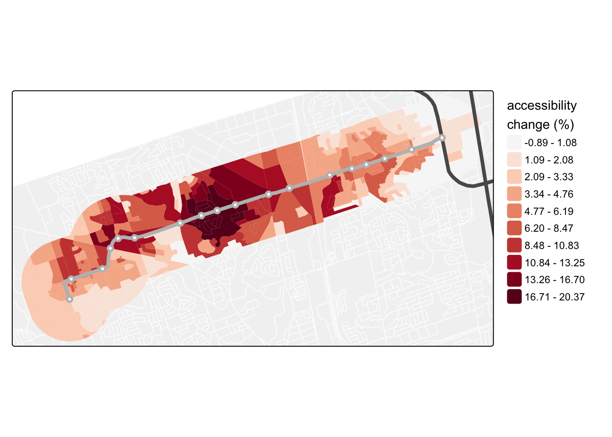

![]()

The excitement is palpable – new rapid transit is opening in Toronto. After 7 years of construction, the $3.6 billion Finch West LRT will open its doors on December 7, beating out another line just to the south who shall not be named.
That excitement for new rapid transit died a little bit when early looks at the new General Transit Feed Specification (GTFS) schedules posted by the TTC this past weekend revealed that the scheduled travel times along the line correspond to an average speed of 13.53kph or about a 45 minute trip from end to end. Per Steve Munro’s reporting, this speed is actually slower than the Finch bus that the LRT is supposed to replace, and certainly slower than the ~18kph and 34 minute travel time from milestone testing.
Now, who knows why these posted GTFS travel times differ so widely from the milestone travel times where vehicles were reaching up to 60kph in some segments. GTFS schedules are a bit opaque in that they reflect static travel times that may or may not be optimistic/pessimistic. Previous work in Toronto has already shown that these schedules can differ quite dramatically from observed vehicle movements captured by GTFS Realtime data (Wessel and Farber 2019).
Perhaps they are overly conservative for a soft opening. Perhaps they are just true based on how the TTC feels comfortable operating the line. Perhaps they are purposefully slow to help make a point about signal priority and we are taking the bait. I suppose all we can do is see how things settle in when proper revenue service begins.
In any case, while travel times are one thing, naturally I wanted to see the impact on accessibility – the potential to reach things using the transportation network – relative to the original bus service and considering these posted and potential speeds. See my previous post on Accessibility Analysis in Toronto for some background on that concept and a full walk through on obtaining data and running an analysis.
As someone currently writing a book on accessibility analysis with R, the opening of Finch West LRT presents a fun opportunity to explore routing, accessibility, and some simple GTFS editing to speed up a service.
Setup
Let’s pick up where the previous post left off and set up our environment. First, allocate some memory to Java for \(R^5\) and {r5r} to work and load a few key packages:
# allocate java memory for r5r
options(java.parameters = "-Xmx8G")
# load base packages
library(tidyverse)
library(sf)
library(tmap)Download Data
Second, we need a few key data inputs to run an accessibility analysis around the Finch West LRT, including an OpenStreetMap (OSM) road network, GTFS transit schedules, and data on the origins and destinations for the analysis. We can save our major data downloads to a new ./data folder:
data_path <- fs::dir_create("./data")Now on to the OSM data:
osmextract::oe_download(
file_url = "http://download.openstreetmap.fr/extracts/north-america/canada/ontario/golden_horseshoe-latest.osm.pbf",
provider = "openstreetmap_fr",
download_directory = data_path
)For GTFS feeds, I will download two different schedule files. One for November-December 2018 with the Finch bus service before construction started and the newest GTFS file from the TTC with the new Finch LRT, both from transit.land. You would need an API key to download these yourself (free for hobbyist use), which is defined here:
transit_land_api_key <- "your_api_key_here" Next, set up a named list with the GTFS feed SHA1 IDs:
gtfs_list <- list(
"ttc_2018" = "91d9cf49675be7b18d921748a573e4f7289e8df6",
"ttc_2025" = "8574169d5cc56d5563f492102d4197549820ad5d"
)Finally, use an iterative walk() from {purrr} to download the feeds:
Code
purrr::iwalk(gtfs_list,
~ httr2::req_perform(
req = httr2::request(
paste0(
"https://transit.land/api/v2/rest/feed_versions/",
.x,
"/download?apikey=",
transit_land_api_key
)
),
path = fs::path(data_path, paste0(.y, ".zip"))
))For origin data I will use 2021 Census Dissemination Blocks (DBs). We need to set up our {cancensus} API key and cache folder:
cancensus::set_cancensus_api_key("<your API key>")
cancensus::set_cancensus_cache_path(data_path)Now we can get them using this code:
census_data_db <- cancensus::get_census(
dataset = 'CA21',
regions = list(CSD = c("3520005")),
level = 'DB',
geo_format = "sf",
use_cache = TRUE) |>
janitor::clean_names() |>
st_transform(crs = 26917) |>
mutate(population_density = population / shape_area)For the destinations, let’s keep it simple and use employment counts captured by the 2016 Transportation Tomorrow Survey (TTS) using the {TTS2016R} package (which you can install from the github repository using {remotes}):
tts_tazs <- TTS2016R::ggh_taz |>
janitor::clean_names() |>
sf::st_transform(crs = 26917) |>
mutate(id = gta06)Finally, to aid with mapping, let’s get the most recent existing and future rapid transit lines shapefile from Metrolinx:
metrolinx_url <- "https://assets.metrolinx.com/raw/upload/v1693928524/Documents/Metrolinx/Open%20Data/September%205%2C%202023%20-%20FRTN/GIS_Data_-_Future_Transit_Network_-_2023-05-12.zip"
utils::download.file(
metrolinx_url,
destfile = fs::path(data_path, "metrolinx_rt.zip")
)
zip::unzip(
zipfile = fs::path(data_path, "metrolinx_rt.zip"),
exdir = data_path
)These data can now be read in as {sf} objects and we can extract the existing rapid transit lines and the Line 6 Finch West LRT:
rt_lines <- st_read("./data/RTP_TRANSIT_NETWORK.shp") |>
st_transform(crs = 26917) |>
janitor::clean_names()
rt_stops <- st_read("./data/RTP_POINTS.shp") |>
st_transform(crs = 26917) |>
janitor::clean_names()
fwlrt_line <- rt_lines |>
filter(name == "Finch West LRT")
fwlrt_stops <- rt_stops |>
filter(name == "Finch West LRT")
existing_rt <- rt_lines |>
filter(
status == "Existing",
technology == "Subway" | str_starts(technology, "GO")
)OK, let’s see what we are working with by making a map of population counts around the Finch West LRT:
Code
fwlrt_line_buffer <- fwlrt_line |>
st_buffer(dist = 1000)
census_data_db_fwlrt <- census_data_db |>
mutate(orig_area = st_area(geometry)) |>
st_intersection(fwlrt_line_buffer) |>
mutate(
id = geo_uid,
new_area = st_area(geometry),
area_ratio = new_area/orig_area,
aw_population = population * area_ratio)
tm_shape(census_data_db, bbox = fwlrt_line_buffer) + tm_polygons(col = "grey99", fill = "grey95") +
tm_shape(census_data_db_fwlrt) +
tm_fill(
fill = "aw_population",
fill.scale = tm_scale_intervals(
n = 10,
style = "jenks",
values = "viridis"
),
fill_alpha = .85,
fill.legend = tm_legend(
title = "population count",
frame = FALSE
)
) +
tm_shape(existing_rt) + tm_lines(col = "grey35", lwd = 4) +
tm_shape(fwlrt_line) + tm_lines(col = "grey", lwd = 4) +
tm_shape(fwlrt_stops) + tm_dots(size = .5, fill = "grey") +
tm_shape(fwlrt_stops) + tm_dots(size = .15, fill = "white")
Build Network
Copy the OSM and GTFS data to a new ttc_prepost folder to store our \(R^5\) network:
ttc_prepost_network_path <- fs::dir_create("./r5_networks/ttc_prepost")
fs::file_copy(
path = fs::path(data_path, "openstreetmap_fr_golden_horseshoe-latest.osm.pbf"),
new_path = ttc_prepost_network_path,
overwrite = TRUE
)
fs::file_copy(
path = fs::path(data_path, "ttc_2018.zip"),
new_path = ttc_prepost_network_path,
overwrite = TRUE
)
fs::file_copy(
path = fs::path(data_path, "ttc_2025.zip"),
new_path = ttc_prepost_network_path,
overwrite = TRUE
)Then build the network using {r5r}:
ttc_prepost_network <- r5r::build_network(data_path = ttc_prepost_network_path)Pre- and Post- Accessibility
Travel Times
How is Line 6 performing in terms of travel times? With the network built, let’s try some simple routes between Humber College and Finch West subway station at 8:00:00 AM on a typical Tuesday in December to see the difference in travel times from 2018 versus 2025 with the Finch West LRT open:
Code
humber_point <- fwlrt_stops |>
filter(location_n == "Humber College") |>
mutate(id = 1) |>
st_transform(crs = 4326)
finch_west_point <- fwlrt_stops |>
filter(location_n == "Finch West") |>
mutate(id = 2) |>
st_transform(crs = 4326)
route_pre_eb <- r5r::detailed_itineraries(
r5r_network = ttc_prepost_network,
origins = humber_point,
destinations = finch_west_point,
mode = "transit",
departure_datetime = ymd_hms("2018-12-11 08:00:00"),
shortest_path = FALSE
) |> filter(option == 1) |>
mutate(scenario = "pre", route = "36", direction = "eastbound")
# 55405 is Finch West route 36 in routes.txt
route_pre_wb <- r5r::detailed_itineraries(
r5r_network = ttc_prepost_network,
origins = finch_west_point,
destinations = humber_point,
mode = "transit",
departure_datetime = ymd_hms("2018-12-11 08:00:00"),
shortest_path = FALSE
) |> filter(option == 1) |>
mutate(scenario = "pre", route = "36", direction = "westbound")
route_post_eb <- r5r::detailed_itineraries(
r5r_network = ttc_prepost_network,
origins = humber_point,
destinations = finch_west_point,
mode = "transit",
departure_datetime = ymd_hms("2025-12-09 08:00:00"),
shortest_path = FALSE
) |>
mutate(scenario = "post", direction = "eastbound")
route_post_wb <- r5r::detailed_itineraries(
r5r_network = ttc_prepost_network,
origins = finch_west_point,
destinations = humber_point,
mode = "transit",
departure_datetime = ymd_hms("2025-12-09 08:00:00"),
shortest_path = FALSE
) |>
mutate(scenario = "post", direction = "westbound")With the routes calculated, lets examine the eastbound and westbound travel times pre-construction and now post-construction with Line 6 (Table 1):
Code
route_pre_eb |>
bind_rows(route_pre_wb, route_post_eb, route_post_wb) |>
filter(mode != "WALK") |>
st_drop_geometry() |>
select(scenario, direction, mode, route, segment_duration) |>
gt::gt()| scenario | direction | mode | route | segment_duration |
|---|---|---|---|---|
| pre | eastbound | BUS | 36 | 44.8 |
| pre | westbound | BUS | 36 | 40.3 |
| post | eastbound | TRAM | 6 | 46.0 |
| post | westbound | TRAM | 6 | 46.0 |
Based on this, it does look like the LRT (yes it is labelled as a TRAM in the GTFS) is scheduled to take 46 minutes end-to-end for this trip, which is a little bit more than the scheduled travel time for the 36 Finch West bus in 2018 (these estimates reflect the in-vehicle time based on scheduled service levels and omit the walking time and wait time that might be required between departing at 8AM and when the first bus arrives).
Accessibility Analysis
Accessibility analysis can give us a better idea of how these travel times might be impacting the potential to reach destinations using the LRT. Let’s examine any differences across the pre-construction period and now with the LRT in the network. I will measure accessibility as the number of jobs that can be reached using transit with the same log-logistic impedance function from my previous post. This impedance function is calibrated to commuting flows by transit and places less weight on destinations that are farther away.
Remember that {r5r} does take service frequency into account in these calculations by running the travel time matrix over a time window and taking the median travel time see vignette. To capture service frequency, I will set this time window to 60 minutes so that we analyze access over the 8:00 AM to 9:00 AM time frame.
Code
tts_jobs <- tts_tazs |>
st_drop_geometry() |>
select(id, jobs)
log_logistic_f <- function(t_ij, med_tau, beta) {
1 / (1 + (t_ij / med_tau)^beta)
}
access_pre <- r5r::travel_time_matrix(
r5r_network = ttc_prepost_network,
origins = census_data_db_fwlrt |> st_centroid() |> st_transform(crs = 4326),
destinations = tts_tazs |> st_centroid() |> st_transform(crs = 4326),
mode = "transit",
departure_datetime = ymd_hms("2018-12-11 08:00:00"),
time_window = 60
) |>
left_join(tts_jobs, by = c("to_id" = "id")) |>
mutate(weighted_jobs = jobs * log_logistic_f(
t_ij = travel_time_p50,
med_tau = 49,
beta = 4.4856
)) |>
group_by(from_id) |>
summarize(access = sum(weighted_jobs)) |>
rename(access_pre = access)
access_post <- r5r::travel_time_matrix(
r5r_network = ttc_prepost_network,
origins = census_data_db_fwlrt |> st_centroid() |> st_transform(crs = 4326),
destinations = tts_tazs |> st_centroid() |> st_transform(crs = 4326),
mode = "transit",
departure_datetime = ymd_hms("2025-12-09 08:00:00"),
time_window = 60
) |>
left_join(tts_jobs, by = c("to_id" = "id")) |>
mutate(weighted_jobs = jobs * log_logistic_f(
t_ij = travel_time_p50,
med_tau = 49,
beta = 4.4856
)) |>
group_by(from_id) |>
summarize(access = sum(weighted_jobs)) |>
rename(access_post = access)Now join the results back to the DBs and calculate the change in access across the pre- and post- accessibility scenarios:
census_data_db_fwlrt_access <- census_data_db_fwlrt |>
left_join(access_pre, by = c("id" = "from_id")) |>
left_join(access_post, by = c("id" = "from_id")) |>
mutate(access_diff_prepost = ((access_post - access_pre) / access_pre) * 100)Let’s examine the results changes spatially:
Code
tm_shape(census_data_db, bbox = fwlrt_line_buffer) + tm_polygons(col = "grey99", fill = "grey95") +
tm_shape(census_data_db_fwlrt_access) +
tm_fill(
fill = "access_diff_prepost",
fill.scale = tm_scale_intervals(
n = 11,
style = "fisher",
midpoint = 0,
values = "-brewer.rd_bu"
),
fill.legend = tm_legend(
title = "accessibility \nchange (%)",
frame = FALSE #
)
) +
tm_shape(existing_rt) + tm_lines(col = "grey35", lwd = 4) +
tm_shape(fwlrt_line) + tm_lines(col = "grey", lwd = 4) +
tm_shape(fwlrt_stops) + tm_dots(size = .5, fill = "grey") +
tm_shape(fwlrt_stops) + tm_dots(size = .15, fill = "white") 
Interesting! The results in Figure 3 show quite a few DBs gained in access by up to about 17% with the LRT relative to the network in late 2018. However, quite a few DBs also lose access with the percentage change reaching up to about -21%. This is obviously not a great result – the addition of “rapid transit” along the corridor, ostensibly to replace a bus that is often bogged down in traffic, does not stand out as an accessibility “home run” with strictly positive gains in this analysis.
Note
I will caution that this is comparing the transit networks across 2018 and now late 2025. There could be additional service changes elsewhere in the network that may be contributing to these results, such as slow zones on the subway. Moreover, these are scheduled services and the travel times along particular routes may be adjusted over GTFS releases to better reflect observed travel times.
Faster Finch
For what it is worth, what if the Finch West LRT was operating faster? Again, the milestone testing had the travel time along the line down to about 34 minutes, or an average travel speed of 18kph. How would the accessibility results change if Line 6 was operating at this speed? Faster speeds generally mean more things should be accessible within a given travel time. We can test this by manipulating the GTFS files to make the LRT faster and building a new network for routing.
First, we will create a new network folder (with _ff for “faster Finch”) and copy over the OSM data:
ttc_2025_ff_path <- fs::dir_create("./r5_networks/ttc_2025_ff")
fs::file_copy(
path = fs::path(data_path, "openstreetmap_fr_golden_horseshoe-latest.osm.pbf"),
new_path = ttc_2025_ff_path,
overwrite = TRUE
)One way to speed up a service is to use the {gtfstools} package, which has limited functions for editing GTFS files. One of these functions is set_trip_speed(), which changes the speeds of the different trips made along a transit route.
Note
My note of caution is that this is a very simplified approach limited to changing the end-to-end travel speed of the line and letting the network router interpolate the intermediate stop times. In the original data, stop times are populated along the entire route and reflect some slower speed segments. That original granularity is lost in this approach and some stations are going to overly benefit in this simulation.
To change the speeds, we need to read in the late 2025 GTFS files into R and collect all the trips made by Line 6 into a list:
ttc_2025_gtfs <- gtfstools::read_gtfs(fs::path(data_path, "ttc_2025.zip"))
fwlrt_trip_ids <- ttc_2025_gtfs |>
gtfstools::filter_by_route_id(route_id = "6") |>
pluck("trips") |>
select(trip_id) |>
deframe()We can confirm Line 6’s average speed (in kph) in these GTFS files as:
ttc_2025_gtfs |>
gtfstools::get_trip_speed(trip_id = fwlrt_trip_ids) |>
summarize(speed = mean(speed)) |>
pull(speed)[1] 13.59186Let’s up this to 18kph and write out a new GTFS file to the faster Finch network folder:
ttc_2025_ff_gtfs <- ttc_2025_gtfs |>
gtfstools::set_trip_speed(trip_id = fwlrt_trip_ids,
speed = 18,
unit = "km/h")
gtfstools::write_gtfs(ttc_2025_ff_gtfs,
path = fs::path(ttc_2025_ff_path, "ttc_2025_ff.zip"))Having vehicles travel faster down the line is going to mess with the vehicle departure and arrival cadence in the scheduled trips, effectively having vehicles travel down the line faster but then wait at the terminus until the next departure time on the old cadence. Thus while the service is faster, more trips are not being made over the 8:00 AM to 9:00 AM time window.
Solving this would require significantly more effort in editing the GTFS files, likely using sketch planning tools outside of R. But as an illustrative analysis, let’s go with it to see how the faster travel times and service levels affect access. To do this, we will build the network:
ttc_2025_ff_network <- r5r::build_network(data_path = ttc_2025_ff_path)And re-run the routing analysis with the faster Finch service on the network:
Code
route_post_ff_eb <- r5r::detailed_itineraries(
r5r_network = ttc_2025_ff_network,
origins = humber_point,
destinations = finch_west_point,
mode = "transit",
departure_datetime = ymd_hms("2025-12-09 08:00:00"),
shortest_path = FALSE
) |>
mutate(scenario = "faster finch", direction = "eastbound")
route_post_ff_wb <- r5r::detailed_itineraries(
r5r_network = ttc_2025_ff_network,
origins = finch_west_point,
destinations = humber_point,
mode = "transit",
departure_datetime = ymd_hms("2025-12-09 08:00:00"),
shortest_path = FALSE
) |>
mutate(scenario = "faster finch", direction = "westbound")Compared to the previous travel times in Table 1, we can see that the 18kph has dropped the end-to-end travel times to about 35 minutes:
Code
route_pre_eb |>
bind_rows(route_pre_wb, route_post_eb, route_post_wb, route_post_ff_eb, route_post_ff_wb) |>
filter(mode != "WALK") |>
st_drop_geometry() |>
select(scenario, direction, mode, segment_duration, route) |>
gt::gt()| scenario | direction | mode | segment_duration | route |
|---|---|---|---|---|
| pre | eastbound | BUS | 44.8 | 36 |
| pre | westbound | BUS | 40.3 | 36 |
| post | eastbound | TRAM | 46.0 | 6 |
| post | westbound | TRAM | 46.0 | 6 |
| faster finch | eastbound | TRAM | 34.6 | 6 |
| faster finch | westbound | TRAM | 34.6 | 6 |
What about changes in accessibility? Let’s re-run the post-scenario accessibility analysis using the faster Finch network:
Code
access_post_ff <- r5r::travel_time_matrix(
r5r_network = ttc_2025_ff_network,
origins = census_data_db_fwlrt |> st_centroid() |> st_transform(crs = 4326),
destinations = tts_tazs |> st_centroid() |> st_transform(crs = 4326),
mode = "transit",
departure_datetime = ymd_hms("2025-12-09 08:00:00"),
time_window = 60
) |>
left_join(tts_jobs, by = c("to_id" = "id")) |>
mutate(weighted_jobs = jobs * log_logistic_f(
t_ij = travel_time_p50,
med_tau = 49,
beta = 4.4856
)) |>
group_by(from_id) |>
summarize(access = sum(weighted_jobs)) |>
rename(access_post_ff = access)And map the results:
Code
census_data_db_fwlrt_access_ff <- census_data_db_fwlrt_access |>
left_join(access_post_ff, by = c("id" = "from_id")) |>
mutate(
access_diff_prepost_ff = ((access_post_ff - access_pre) / access_pre) * 100,
access_diff_postpost_ff = ((access_post_ff - access_post) / access_post) * 100
) |>
pivot_longer(cols = starts_with("access_diff"), names_to = "scenario", values_to = "access_diff", names_prefix = "access_diff_")
tm_shape(census_data_db, bbox = fwlrt_line_buffer) + tm_polygons(col = "grey99", fill = "grey95") +
tm_shape(census_data_db_fwlrt_access_ff |> filter(scenario != "postpost_ff")) +
tm_fill(
fill = "access_diff",
fill.free = TRUE,
fill.scale = tm_scale_intervals(
n = 11,
style = "fisher",
midpoint = 0,
values = "-brewer.rd_bu"
),
fill.legend = tm_legend(
title = "accessibility \nchange (%)",
frame = FALSE
),
fill.chart = tm_chart_histogram()
) +
tm_facets_vstack(by = "scenario") +
tm_shape(existing_rt) + tm_lines(col = "grey35", lwd = 4) +
tm_shape(fwlrt_line) + tm_lines(col = "grey", lwd = 4) +
tm_shape(fwlrt_stops) + tm_dots(size = .5, fill = "grey") +
tm_shape(fwlrt_stops) + tm_dots(size = .15, fill = "white") +
tm_layout(
between.margin = 0.2,
panel.label.bg = FALSE,
panel.label.frame = FALSE,
panel.labels = c("original pre-post", "pre-post with faster finch")
)
From Figure 4 we can see that the change in speed from 13.6kph to 18kph does help to increase accessibility along the line, with only a small number of DBs still negative.
For the current period only, we can see how the increase in speed increases accessibility to jobs by up to about 20% for some DBs:
Code
tm_shape(census_data_db, bbox = fwlrt_line_buffer) + tm_polygons(col = "grey99", fill = "grey95") +
tm_shape(census_data_db_fwlrt_access_ff |> filter(scenario == "postpost_ff")) +
tm_fill(
fill = "access_diff",
fill.scale = tm_scale_intervals(
n = 10,
style = "fisher",
midpoint = 0,
values = "-brewer.rd_bu"
),
fill.legend = tm_legend(
title = "accessibility \nchange (%)",
frame = FALSE
)
) +
tm_shape(existing_rt) + tm_lines(col = "grey35", lwd = 4) +
tm_shape(fwlrt_line) + tm_lines(col = "grey", lwd = 4) +
tm_shape(fwlrt_stops) + tm_dots(size = .5, fill = "grey") +
tm_shape(fwlrt_stops) + tm_dots(size = .15, fill = "white")

Wrap-up
I’m still excited about Finch and hopeful that service speeds and frequencies will ramp up as the line finds its groove. While the raw change in average speed used here indirectly penalizes the line for not running more trips, the results still show what we’d expect: speeding up Finch meaningfully increases access.
Bigger picture, Toronto’s surface transit services are often constrained by a transit priority problem – ineffective transit signal priority and a persistent emphasis on preserving car capacity. If we spend billions on an LRT only to have it run like Figure 6, oof. And that’s before we even get to other planning choices like tightly spaced stations (I see you Birchmount–Ionview). Looking forward to testing the “slow transit hypothesis” again if/when the Crosstown opens!

References
Wessel, Nate, and Steven Farber. 2019. “On the Accuracy of Schedule-Based GTFS for Measuring Accessibility.” Journal of Transport and Land Use 12 (1). https://doi.org/10.5198/jtlu.2019.1502.